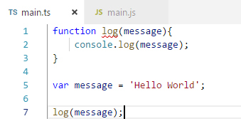
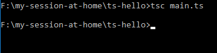
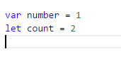
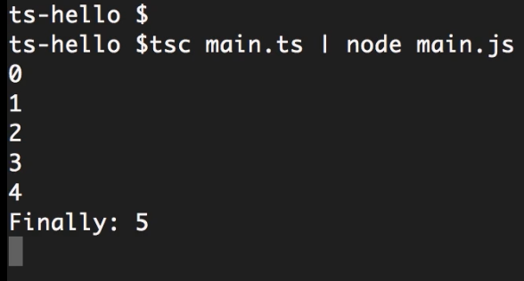

It is a superset of JavaScript. So it means the any invalid JavaScript code also valid Typescript code. But Typescript has a additional features that do not exist in correct version of JavaScript. For ex:-
So basically typescript fixing and compile it then transpile into JavaScript invalid code which browser understand.
Transpile typescript code to JavaScript code
Two ways to declare Variable:-
JavaScript have different versions
Compile main.ts file
